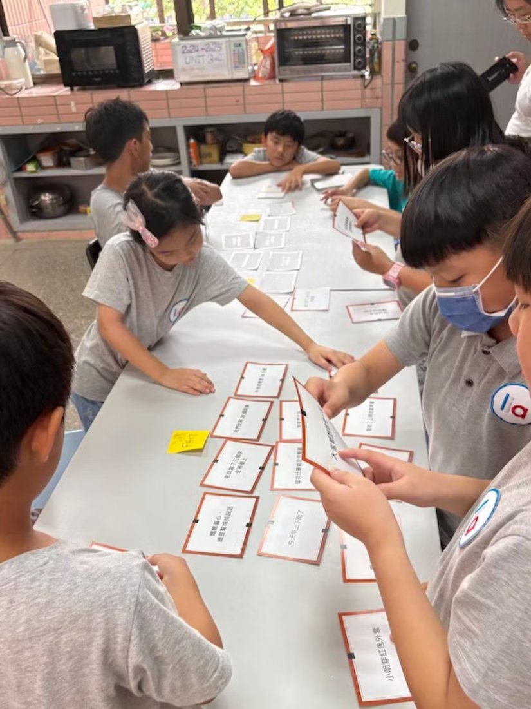
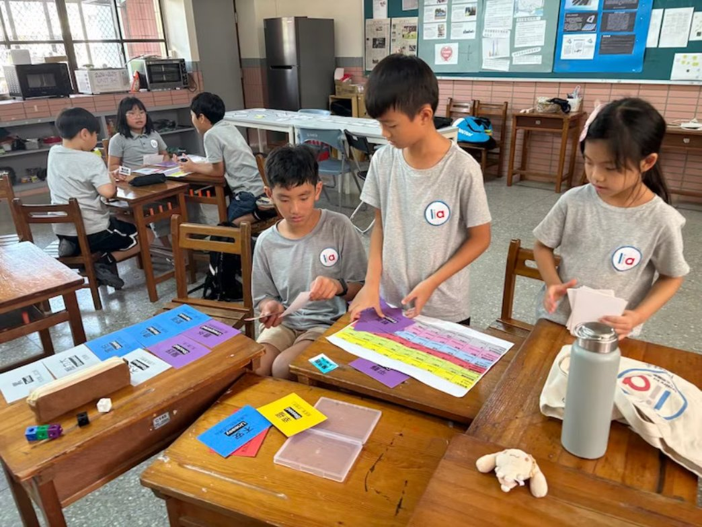
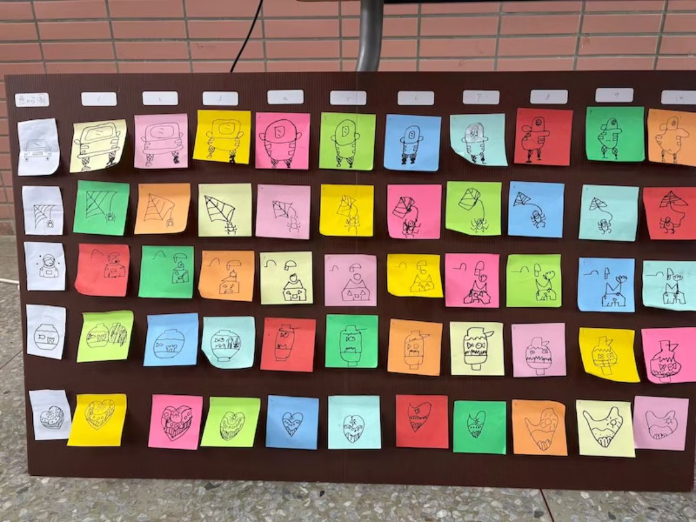
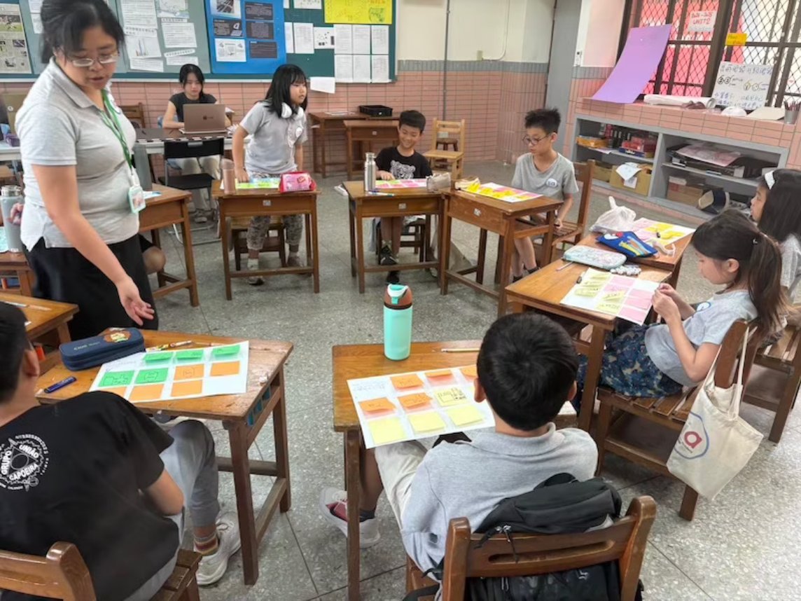
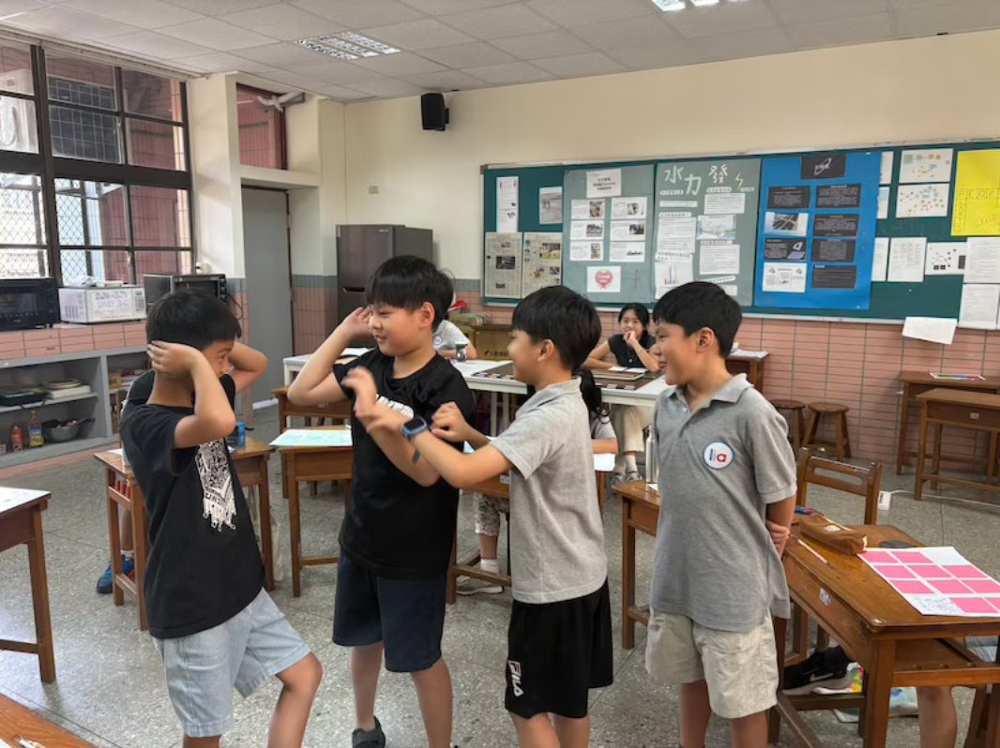
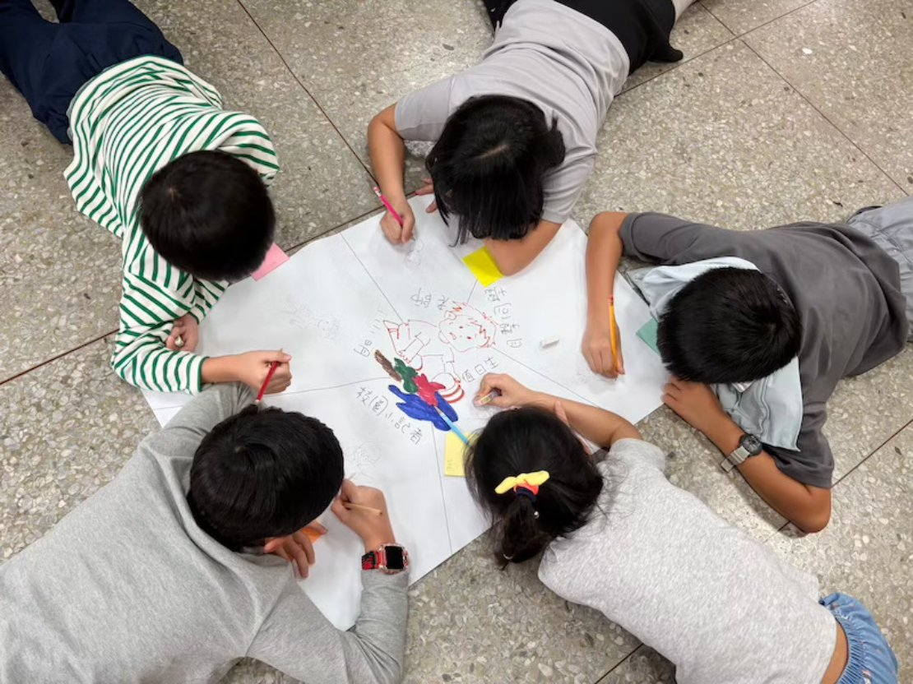

01 / COMMUNICATION
沟通力
理解自己，也听懂他人
从接纳自己的感受与需要开始，练习同理、倾听与换位思考。理解事情有不同角度，在差异中找到对话与合作的可能。
练习方向｜自我觉察・观点交换・合作对话
EDUCATOR / HOST / FACILITATOR / FOUNDER
江宜汾
我是江宜汾，以沟通力、表达力与思考力为核心设计课程。从接纳自己、同理他人，到形成观点、清晰表达，陪伴不同年龄的学习者，把事情想清楚、把话说明白，与他人好好合作。


江宜汾
教育工作者 1221 未来教育发展协会COURSE DESIGN
想得清楚，说得明白，
与他人一起把事情做好。
面对 AI 持续改变学习与工作的时代，我关注人如何理解自己、辨别资讯、形成判断，并与他人合作。我的课程将沟通、思考与表达串连起来，透过提问、讨论与真实任务，让这些能力在生活中练习。
01 / COMMUNICATION
理解自己，也听懂他人
从接纳自己的感受与需要开始，练习同理、倾听与换位思考。理解事情有不同角度，在差异中找到对话与合作的可能。
练习方向｜自我觉察・观点交换・合作对话
02 / CRITICAL THINKING
厘清问题，形成自己的判断
透过提问与探索，区分事实、观点与假设，检视资讯和理由。练习形成有依据的看法，也保留重新思考的空间。
练习方向｜问题探索・资讯判读・观点形成
03 / EXPRESSION
整理思绪，让想法被理解
将思考转化为有结构、有逻辑的表达。从对话、采访到分享与演说，依对象和情境组织内容，清楚传达自己的观点。
练习方向｜内容组织・叙事表达・分享回馈
可依儿童、青少年、家长或成人的需求，调整议题、活动与思考深度，规划单场工作坊或系列课程。欢迎台湾与中国大陆的学校、教育机构及社群洽谈合作。
TEACHING EXPERIENCE
这些是我过往与教育机构合作的课程案例，也是持续发展课程的实践基础。新的合作可依学员年龄、学习目标与场域，调整主题、深度及活动设计。


LIA 五明国际学苑
The Art of Asking: Inquiry, Self-Discovery, and the World
Critical Thinking
华砇实验教育机构
展赋行动学苑 / 五明国际学苑共同课程
爱因思卡实验教育机构
曾任教机构，目前已停止招生
在 LIA 五明国际学苑的批判思考课程中，我带领学生从认识自己的感受与想法开始，透过分类、游戏、讨论与采访，练习辨别讯息、理解不同观点，最后以迷你辩论整理并表达自己的立场。
THINK / LISTEN / SPEAK
辩论是课程中的表达练习。学生轮流说明立场、提出理由，也聆听并回应对方，将课堂里学到的提问、思考与沟通带到实际发表中。
看看课堂如何进行 ↓分辨事实、感受与想法，认识情绪与内在反应。
透过「想法眼镜」练习，为挫折找到不同的理解与行动。
从画画接龙到真假讯息辨识，练习查证与媒体识读。
比较不同观点，透过角色反转练习同理与倾听。
练习开放式提问、一次聚焦一件事，避免在问题里预设答案。
整理理由，练习清楚发言，透过迷你辩论回应不同意见。






01 / PODCAST
与好好听共同制作，累积超过 100 集的教育对话。
从教室、家庭到未来社会，透过访谈与思辨，让更多人看见学习可以发生的不同方式。精选短影音同步分享于 1221 未来教育发展协会 Facebook。

对话现场 / CONVERSATIONS


02 / TERRA SCHOOL
以自然为师，向地球学习。
泰拉学校是一所没有围墙的学校，带领学习者走进田野、山林与海岸，从体验中觉察自己、理解他人，并回应真实世界的问题。


01 / EARTH
走进土地与生产现场，理解农业、生活和地方关系，已展开 2026 成果整理。

02 / SKY
以五日高山移动学习为核心，在高度、气候与团队协作中练习判断。

03 / OCEAN
从沿岸与海洋环境出发，观察水域生态和人类生活，作为筹备中的未来系列。

陪伴并不是完美解答，
而是稳定地在场。03 / PARENT CIRCLE
孩子成长的路上，家长也值得被理解与支持。
六周引导历程，每周一次、每次两小时，陪伴家长从看见自己开始，在理解与接纳中，建立更稳定的家庭支持力量。
看见自己的状态与需要
理解情绪与亲子互动
练习稳定而清楚的陪伴
建立家庭支持力量
ARC × RECODE
在 ARC 家长圈里，我们不只处理孩子的行为，也陪家长看见自己被触发的瞬间：内在需要、核心恐惧、旧有剧本与信念如何推动控制、焦虑或说教。透过 RECODE 的整理，家长能重新理解自己的反应，练习把旧模式改写成更清楚、更稳定的亲子互动。

04 / EMOTIONAL AGILITY

01
情绪灵敏力认证引导师
Developed by Susan David, Ph.D. / 2026EMOTIONAL AGILITY WORKSHOP
透过双讲师引导、个案剖析与实作，在刺激与反应之间找回选择回应的空间。
05 / C+ SALON · TAIPEI SINCE 2025
从意识出发，
在相遇与对话中感受人生。
2025 年起，我在台北开办 C+ Salon，邀请艺术、文化、国学、科技等不同领域的分享者，与参与者一起交流、探索，让不同观点走进日常。
C+ 以 Conscious 为起点，从意识与觉察出发，延伸出连结（Connection）、创造（Creation）、沟通（Communication）、整合协作（Cooperation），以及感受人生的勇气（Courage）。
透过主题分享与真诚对话，期望提升生活品味、深化对生命的理解，促进身心健康。未来也期待在中国大陆举办，让更多人一起参与这样的相遇。
洽询沙龙分享与合作 →


SPEAKING
陪孩子找到方向，
一起走向未来的光。
以亲职对话与未来教育为核心，和家长、学校及教育社群分享如何理解孩子、启发潜能，并成为成长路上的支持力量。


MEDIA / HOSTING


BACKGROUND
Experience
Education


从节目策划到外景采访，累积制作、访谈与镜头前表达的实务经验。
观看《小资赚大钱》节目 ↗CREDENTIALS

02
全脑思维偏好青少年认证引导师
Emergenetics International / 2025